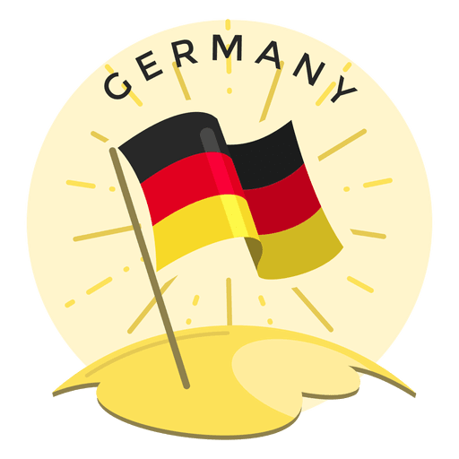
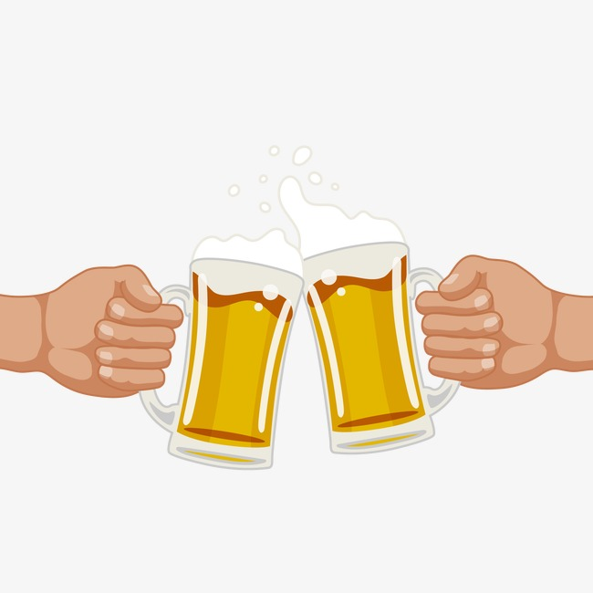

De olho no roteiro pela Europa e em busca de dicas de turismo na Alemanha? Neste post, você vai encontrar sugestões de destinos que vão além da capital, Berlim, e um pequeno guia sobre os costumes locais, expressões em alemão, necessidade de seguro de viagem e muito mais.
Se a Alemanha é o seu próximo destino de viagem, este texto é especialmente dedicado a você.
O país unificado por Bismarck mais de cem anos atrás é o bastião econômico da Europa e uma das figuras centrais da história dos últimos dois séculos.
Por isso, não dá pra ficar apenas na capital e não dá para desembarcar sem um bom roteiro.
A capital do país, Berlim, é visita obrigatória. É o palco de grandes acontecimentos da história contemporânea e possui inúmeros museus, galerias de arte e uma vibrante vida noturna. Mas você não deve limitar seu roteiro pela Alemanha desse jeito. Há muitos destinos lindos, históricos e cheios de cultura (e cerveja) esperando a sua visita. Para facilitar a sua vida e fazer uma viagem completa, listamos as principais cidades turísticas além da capital que você não se arrependerá de conhecer.
Famosa por suas inúmeras cervejarias e por ser a cidade da Oktoberfest, uma das festas mais famosas do mundo. Tal como Berlim, Munique também possui vários museus, galerias e uma ativa vida noturna.
Uma cidade para quem gosta de metrópoles modernas e grandes arranha-céus. Frankfurt é uma metrópole grande e populosa, sede de muitas empresas importantes e um dos principais pólos econômicos e financeiros da Europa.
Este é um dos destinos mais visitados na Alemanha. A cidade foi completamente destruída na Segunda Guerra, mas foi também reconstruída e sua arquitetura barroca, herança do auge do Império Saxônico, do qual a cidade foi capital, foi restaurada e é uma das grandes atrações locais.
Uma cidade que pode ser visitada a partir de Frankfurt, Heidelberg é um destino para quem gosta de uma passeio mais tranquilo. Possui um centro histórico incrivelmente preservado e alguns dos castelos medievais mais interessantes do país, como o Schloss Heidelberg (Castelo de Heidelberg).
É a cidade do famoso tribunal que já deu filmes ao cinema e marcou o fim da Segunda Guerra Mundial. São inúmeras atrações e merece alguns dias a mais de permanência.
Tal como Heidelberg, também tem um castelo homônimo da cidade, o Castelo de Nuremberg. Conta com um famoso e grande zoológico e várias atrações históricas. O memorial do julgamento de Nuremberg é um dos destaques para conhecer na cidade.
Colônia está às margens do rio Reno, um dos mais importantes da Europa. Lá você pode fazer um dos ótimos passeios pelo rio e visitar a Catedral de Colônia, uma das mais famosas e importantes da Europa. A cerveja da cidade, a Kölsch, tem renome nacional e não deve ser esquecida quando você passar por lá.
Não é uma cidade, e sim um dos estados da Alemanha. A capital da região da Baviera é Munique, mas o que ressaltamos aqui é o interior do estado.
Circundada por pequenos vilarejos tradicionais e casinhas coloridas ao melhor estilo tradicional do interior alemão, a região da Baviera também compensa uma breve visita. Como você vai ir para Munique, incluir alguns dos vilarejos do interior torna-se uma extensão natural do roteiro.
Como a Alemanha faz parte do Tratado de Schengen, nós brasileiros não precisamos de visto para viagens de até 90 dias. No entanto é necessário seguro de viagem e também ter passaporte com validade por 6 meses após a entrada.
Tenha em mãos os contatos da embaixada brasileira em Berlim e antes de viajar, verifique se houve atualizações nos requisitos de entrada em alguma das representações diplomáticas alemãs no Brasil
Sempre que viajamos para outro lugar, é preciso que tomemos cuidado e respeitemos os costumes e tradições locais. Com os alemães não é diferente. Fique atento aos seguintes costumes comportamentais:
A Alemanha tem uma intensa cultura e tradição cervejeira. Não deixe de experimentar os rótulos locais e os diferentes tipos de cerveja que podem ser encontrados. Cerveja em alemão é “Bier”, pronuncia-se mais como “Biar”, fazendo o “e” bem aberto, quase virando um “a” mesmo. Na mesa com os amigos, não deixe de falar o “Prost!” (Saúde), a saudação alemã ao brindar com os amigos.
Leipzig é uma cidade que fica no Leste da Alemanha, numa zona que antes da queda do Muro de Berlim fazia parte da RDA (República Democrática da Alemanha). Na realidade foi em Leipzig que se iniciou a revolta contra o regime comunista que, sob apertado controle da União Soviética, governava aquele país criado na sequência da Segunda Guerra Mundial.
Nasceu na Alemanha a 1 de julho de 1646, na cidade de Leipzig. Foi um matemático extraordinário.
A Liebniz é atribuída a criação do termo/nome "função" no ano de 1694, usando esta terminologia para descrever uma quantidade relacionada com uma curva. É-lhe igualmente atribuído em parceria com Newton o desenvolvimento do cálculo moderno, em particular, o desenvolvimento do Integral e da Regra do Produto.
Ao terminar a II Guerra Mundial, depois da divisão da Alemanha, Berlim também ficou dividida em quatro setores de ocupação: soviético, americano, francês e inglês. As péssimas relações entre os comunistas e os aliados foram crescendo até chegar ao ponto de surgirem duas moedas, dois ideais políticos e, finalmente, duas alemanhas.
A construção do Muro de Berlim e especialmente sua queda fizeram parte dos momentos mais importantes da história do século XX. Este muro dividiu Berlim em duas partes durante 28 anos, separando famílias e amigos.
A queda do muro foi motivada pela abertura das fronteiras entre a Áustria e a Hungria em maio de 1989, já que cada vez mais alemães viajavam à Hungria para pedir asilo nas diferentes embaixadas da República Federal Alemã. Esse fato motivou enormes manifestações na Alexanderplatz, o que fez com que, no dia 9 de novembro de 1989, o governo da RDA afirmasse que a passagem para o lado oeste estava permitida.
No dia seguinte foram abertas as primeiras brechas no muro e começou a contagem regressiva para o final dos seus dias.
Depois de terem sido liberados, famílias e amigos puderam voltar a se ver depois de 28 anos de separação forçada.